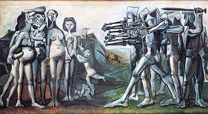

- Kore'de Katliam, İspanyol ressam Pablo Picasso'nun 1951 tarihli tablosu. Çalışma dışavurumculuk akımının örneklerinden biridir ve Francisco Goya'nın 1814 tarihli Madrid'de 3 Mayıs 1808 isimli tablosundan esinlenerek yaratılmıştır. Madrid'de 3 Mayıs 1808'de, Napoleon'un askerlerinin İspanyol sivillerini öldürmesi anlatılır.
- Goya'nın bu tablosundan ilk olarak Manet etkilenmiş ve 1867 yılında İmparator I. Maximilian'ın İnfazı isimli bir tablo çizmişti. Picasso da bu geleneğe devam etti.
- Tıpkı Goya'nın çalışmasında olduğu gibi Kore'de Katliam'da da iki ayrı parça vardır. Resmin sol tarafında bir grup çıplak Koreli kadın ve çocuk durur. Sağ tarafta ise ağır silahlar donanmış, Amerika Birleşik Devletleri'ni temsil eden şövalyeler vardır.
- Resmi yaptığı dönemde, Picasso, komünist ideolojiden uzaklaşmaktaydı. Fakat bu çalışmanın, onun komünizme olan sempatisini gösterdiği düşünülür. Ressam, eseri, Amerika Birleşik Devletleri'nin Kore Savaşı'ndaki politikasını protesto etmek için yaptı.
ANASAYFAYA GERİ DÖN